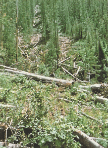
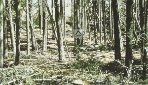
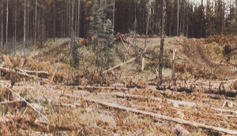

|
|
Fire Behavior Fuel Model 11 -- Light Logging Slash |
Anderson (1982) classifies Fire Behavior Fuel Model 11 in the Logging Slash Fuel Type and describes it as follows:
Fires are fairly active in the slash and herbaceous material intermixed with the slash. The spacing of the rather light fuel load, shading from overstory, or the aging of the fine fuels can contribute to limiting the fire potential. Light partial cuts or thinning operations in mixed conifer stands, hardwood stands, and southern pine harvests are considered. Clearcut operations generally produce more slash than represented here. The less than 3-inch (7.6 cm) material load is less than 12 tons per acre (5.4 t/ha). The greater than 3 inch (7.6 cm) is represented by not more than 10 pieces, 4 inches (10.2 cm) in diameter, along a 50 foot (15 m) transect.
Anderson's (1982) photographs 31, 32, and 33 are examples of fuels fitting this model.
|  | Anderson (1982) Photo 31, Fire Behavior Fuel Model 11. Slash residues left after skyline logging in western Montana (USA). |
|  | Anderson (1982) Photo 32, Fire Behavior Fuel Model 11. Mixed conifer partial cut slash residues may be similar to closed timber and down woody fuels. |
|  | Anderson (1982) Photo 33, Fire Behavior Fuel Model 11. Light logging residues with patchy distribution seldom can develop high intensities. |